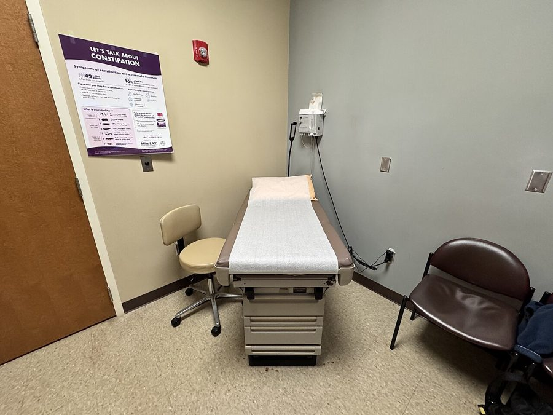
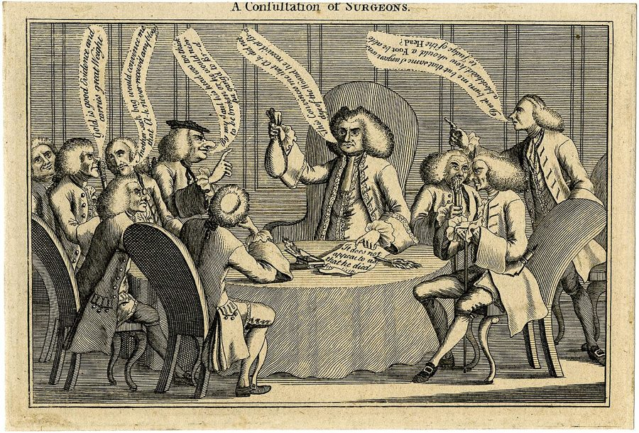
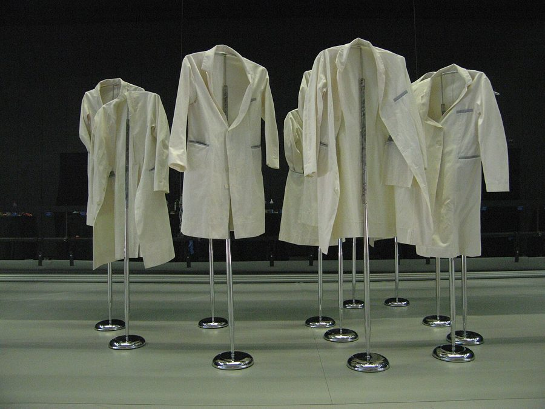
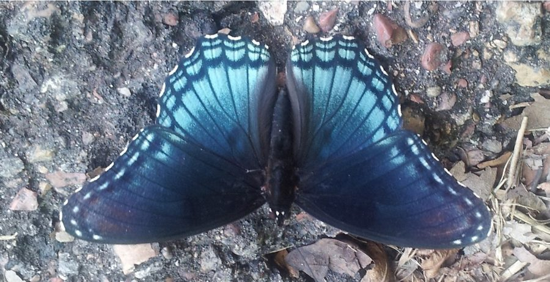

这一章在做什么
全书最短的一章，只有一场戏：作者回诊所复诊，等一个结果。没有费曼，没有物理，写的是一个人躺在检查台上的害怕，和他对医生的不信任。
句子都短，难点在语气：哪些是他心里的话，哪些是挖苦。本页前两节不剧透；词条边读边查。
背景：作者默认你知道的事
美国人从小就这样看病，所以作者一个字不解释。知道流程，第 1–7 段的画面就清楚了。
笑脸医生Dr. Smiley-Face作者给他的医生起的外号，不是姓。第 18 章说他脸圆、几乎全秃，像个笑脸。书里没给他名字。
两位专科医生two specialists笑脸医生请来会诊的同行，没有名字。下结论的是他们。
美国诊所：一个人在小房间里等

美国一间普通诊室。检查台上铺的那条纸是一次性的，每个病人换一段。书里的 papered cushion 就是它。
Harrison Keely，CC BY 4.0，维基共享资源
在美国看病要预约。到了先在候诊区等，护士叫到名字，把你领进一间小诊室（examination room），关上门，你一个人在里面等医生进来。上一章作者在候诊区等了四十分钟；这一次没让他等，直接领了进去。
consultation：请别的医生来会诊

1769 年英国的一幅讽刺版画，标题就是 A Consultation of Surgeons（外科医生会诊）。几个医生凑在一起下结论，这件事被人怀疑也不是一天两天了。
作者不详，公有领域，维基共享资源
美国的医生分两层：平时看的是全科医生，遇到拿不准的病，再请专科医生（specialist）看。医生之间为一个病人商量，叫 consultation。病人自己再找一位医生核对诊断，叫 second opinion。
白大褂

白大褂（white coat / lab coat）。
Pi. from Leiden, Holland，CC BY 2.0，维基共享资源
大众印象里科学家都穿白大褂。理论物理学家其实不穿，他们只用纸笔和黑板。所以第 7 段说「和物理学家不一样，这些医生真的穿」，句子里的 did 就是在回应这个印象。
词与短语
词条按在书里出现的顺序排。斜体小字是它所在的那句话里的几个词，方便你在纸质书上找到。
tighten up
… the clinic, my stomach tightened up. …
（胃）揪紧了
说的是紧张，不是胃病。见页首的图。
be shown to
… was immediately shown to an examination …
被领到（某个房间）
show + 人 + to + 地方 = 给人带路。不是「被展示」。
if I liked
… there and rest if I liked. …
如果我愿意的话
= if I wanted to。like 在这里是「想要」，不是「喜欢」。
treat me nice
… Yeah, they treat me nice, now, …
对我客气
口语。书面该用副词 nicely。这句没加引号，是他心里的话；Yeah 带着冷笑。
feel sorry for
… Because they feel sorry for me. …
可怜（某人）
不是「对……感到抱歉」。
papered cushion
… Lying on the papered cushion, I …
铺着纸的垫子（检查台）
paper 当动词：铺上纸。见上面诊室的照片。
picture
… cushion, I pictured all the nasty …
在脑子里想象出
这里是动词。
procedure
… all the nasty procedures that might …
医疗操作（手术、检查、穿刺之类）
医院里说 a procedure，指在你身上做的一项处置，不是「流程」。nasty = 让人难受的。
in itself
… which in itself was too terrible …
光是它本身（就已经……）
意思是：手术一项就够可怕了，后面还有一串。
contemplate
… too terrible to contemplate, and then …
细想，设想
too terrible to contemplate = 可怕得不敢去想。
radiation or chemo
… and maybe radiation or chemo, which …
放疗或化疗
口语缩写：radiation therapy、chemotherapy。chemo 读 /ˈkiːmoʊ/。
mutilation
… meant further internal mutilation. Terrible …
（对身体的）残害，毁伤
词很重。他把治疗本身也看成对身体内部的又一轮破坏。
nausea
… mutilation. Terrible nausea, and losing …
恶心，想吐
读 /ˈnɔːziə/。这一句没有动词，是他脑子里一条条闪过的画面。
consultation
… I’ve asked for a consultation …
会诊
不是病人来「咨询」。是医生请别的医生一起看。
step out
… Then he stepped out. He had …
出去一下
暂时离开房间，马上回来的那种。
grim
… He had sounded grim. I wondered …
（口气）沉重，严峻
in store for
… What was in store for me? …
等着（某人）的，将要发生在（某人）身上的
store 是存放。字面：给我存着什么？和商店无关。
a testament to
… a testament, I figured, to his …
……的证明
中间插了 I figured。连起来读是 a testament to his excitement。
show … off
… He was showing me off. Soon, …
拿……出来显摆
他觉得医生把他当成稀罕病例向同行展示。上一章医生说过这病例少见得可以发论文。
huddle over
… men stood there, huddled over my …
凑成一堆，俯身围着
balls
… over my balls. Unlike physicists, these …
睾丸
俚语，日常说法。医学用词是 testicles，第 14、15 段用的就是它。
did wear
… these doctors did wear white coats. …
真的穿（白大褂）
did + 动词原形是强调，不是过去式疑问。
insulate
… wore them to insulate themselves from …
隔开，隔绝
本义是电线的绝缘、房子的保温。
blighted
… themselves from my blighted body. …
染了病的，被毁掉的
blight 本指让庄稼成片枯死的病害。
just fine
… even tumors. You are just fine. …
完全没事
just 在这里是加强：一点问题都没有。tumor = 肿瘤。
malignant
… the lumps were malignant. Why do …
恶性的
反义词 benign（良性的）。lump 是摸得到的肿块、疙瘩。
X-ray fingertips
… Do they have X-ray fingertips? What …
带 X 光的指尖
挖苦：他们摸一下就能看透？仿的是 X-ray vision（超人的透视眼）。
practice medicine
… kind of medicine do you practice, …
行医
practice 在这里是「从事（医生、律师这类职业）」，不是「练习」。
majority rules
… you practice, majority rules? …
少数服从多数
小孩分组、开会表决时的口头语。这里是讽刺：二比一，所以我没病？
mirror image
… They’re mirror images,” the specialist said. …
镜像，左右对称的一对
remark on
… other doctor ever remarked on them …
提到，说起
virgin territory
… until now been virgin territory. …
没人到过的地方
固定搭配，指从未被勘探的土地。前面的 landscape（地形）是同一个比喻。作者在自嘲：从没有医生留意过那里。
that was that
… for them at least, was that. …
事情就这么完了
整句是 that … was that，中间插了 for them at least：至少对他们来说，到此为止。
a sinking feeling
… give me a sinking feeling in …
心里一沉的感觉
sink 是下沉。这一句的 would 表示过去反复发生：每次看到都会。
ailment
… saw for unrelated ailments, as I …
小病
unrelated = 和这件事无关的。
by the way
… them to, by the way, also …
顺便（也查一下）
这是他对医生说话时的口气，被直接嵌进了叙述里：装作随口一提。
be over
… I’m finally over that. I figure, …
走出来了，不再受它影响
be over / get over + 事 = 从这件事里恢复过来。
figure
… over that. I figure, if it …
我估摸着，我想
美式口语，= I think。第 7 段的 I figured 也是。
long dead
… I’d be long dead by now. …
早就死了
long 作副词 = 很久以前就。
congenital
… my genitals was congenital. I had …
先天的，生来就有的
genitals 是生殖器。两个词长得像（同一个词根），作者在玩文字游戏。
值得停下来的句子
从这里往下会说到这一章的结局。还没读完原文的话，先去读。
What kind of medicine do you practice, majority rules?
— 第 11 段，作者心里对医生说的话。本站译：你们行的这叫什么医，少数服从多数？
第 11 段后半没有引号，全是他没说出口的质问，直接用 you 对着笑脸医生。逗号后面的 majority rules 是给自己问题的挖苦式回答。
注意情绪的顺序：先是松了口气、流泪，紧接着是不信。同一个医生上次说「总是恶性」，这次两个人摸了摸就说没事，他凭什么信后一个结论？
The problem with my genitals was congenital. I had been saved by symmetry.
— 第 16 段，全章最后两句。本站译：我生殖器上的毛病是天生的。救了我的是对称。
第一句是文字游戏，genitals 和 congenital 押在一起。第二句是给物理读者的：对称（symmetry）是现代物理最核心的概念之一，很多基本定律是顺着对称性找出来的。作者这回是靠它保住了身体。
本站示意图。这是书里那位专科医生在第 13–14 段的推理，照书里的说法画的，不是医学建议。

mirror image 的样子：蝴蝶的左翅和右翅互为镜像。身体按一套遗传指令发育，左右两边才会长成这样。
Stuart B. Herring，CC BY-SA 4.0，维基共享资源
检查一下理解
先在心里答，再点开。答错的那题，回书里把对应段落再读一遍。
1. 第 1 段的 Yeah, they treat me nice, now 是在感谢诊所吗？
不是，是苦笑。上次让他干等四十分钟，这次马上领进去还让他躺着，他的解读是：他们知道我得了重病，在可怜我。这句没有引号，是心里话。
2. 医生带来两位专科医生。作者说这是因为医生对他的病「兴奋」、在「显摆」。这是事实吗？
是作者当时的猜测，句子里有 I figured。他带着上一章留下的怨气：那位医生说过这个病例稀罕得可以发论文。医生自己说的理由只是请了最好的人来会诊。
3. 听到「你没事」之后，作者的反应是什么？
两步。先是全身松下来，流了泪。马上又转成怀疑和火气：你上次说是恶性的，这两个人凭手指就能推翻？majority rules 那句是讽刺，不是在讲道理。
4. 专科医生凭什么断定不是肿瘤？
两侧的肿块一模一样，互为镜像。肿瘤不会这样对称地长，所以只能是天生的结构。不是靠化验，是靠一个推理。
5. that, for them at least, was that. 这句的 for them at least 在强调什么？
强调对医生来说事情结束了，对作者没有。后面写的是：此后很多年他还是不敢全信，看到相关的报纸文章会头晕，看别的病也要请医生顺便再查一次。
6. 第 16 段说 I’m finally over that。他凭什么最后放下了？
不是因为终于信了医生，而是靠时间：如果当初真是癌症，自己早就不在了。这个理由是他自己推出来的。